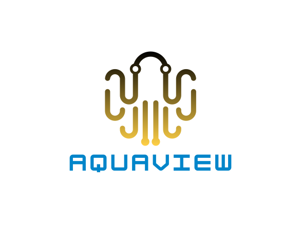
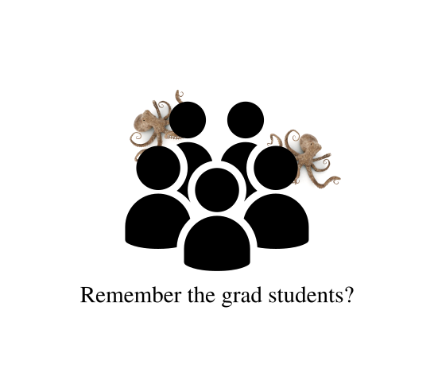

What is AQUAVIEW?
AQUAVIEW will automagically extract the metadata from your data...
...and combine it with the metadata from other data sources to create a single, searchable, and reusable metadata record.
And can automagically package this data according to one of several standards, including the archive's.
Let's go back in time...
... and use a variety of tools to package it correctly.


Let's go back in time...
... which means one Expedition at a time.
... and she misses a new discovery.


